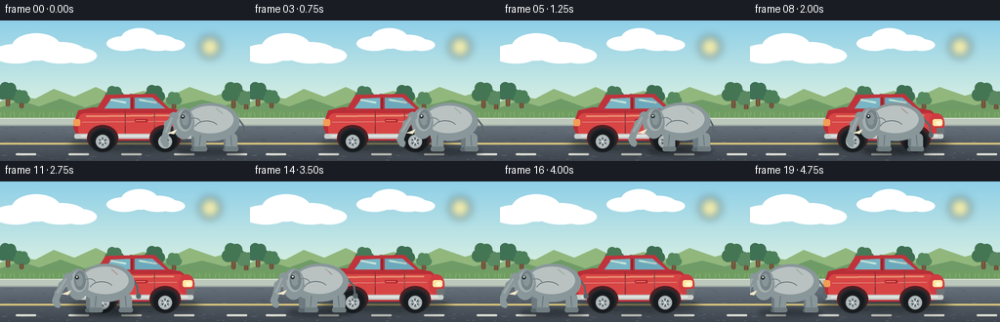
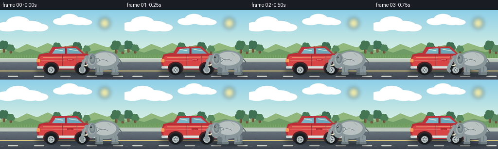

CODING AGENTS AS PIXEL WORLD MODELS
traex/DeepSeek-V4.1-Flash · dynamic_spatial_relationship_0068
点击播放 · 原生 RGB 像素
逐轮保存的候选
回放视频、检查图与代码变化。
每份候选均可单独播放。实际图片检查记录在下方工具轨迹中。
候选 01播放与检查图
点击播放 · 原生 RGB 像素


展开代码变化
--- 上一保存版本
+++ 本次保存版本
@@ -0,0 +1,346 @@
+from pathlib import Path
+import math
+
+import numpy as np
+from PIL import Image, ImageDraw, ImageFilter
+
+import artifact_io
+
+
+W, H = 256, 144
+FRAMES = 20
+FPS = 4.0
+S = 4
+CW, CH = W * S, H * S
+CASE_DIR = Path(__file__).resolve().parent
+
+
+def box(values):
+ return tuple(round(value * S) for value in values)
+
+
+def rgba(hex_color, alpha=255):
+ value = hex_color.lstrip("#")
+ return tuple(int(value[i:i + 2], 16) for i in (0, 2, 4)) + (alpha,)
+
+
+def vertical_gradient(top, bottom, y0, y1):
+ rows = np.zeros((CH, CW, 3), dtype=np.float32)
+ y = np.arange(CH, dtype=np.float32)
+ t = np.clip((y - y0 * S) / max(1, (y1 - y0) * S), 0, 1)
+ top_rgb = np.array(rgba(top)[:3], dtype=np.float32)
+ bottom_rgb = np.array(rgba(bottom)[:3], dtype=np.float32)
+ for c in range(3):
+ rows[:, :, c] = top_rgb[c] * (1 - t[:, None]) + bottom_rgb[c] * t[:, None]
+ return Image.fromarray(rows.astype(np.uint8), "RGB").convert("RGBA")
+
+
+def rounded_mask(size, bounds, radius):
+ mask = Image.new("L", size, 0)
+ ImageDraw.Draw(mask).rounded_rectangle(bounds, radius=radius, fill=255)
+ return mask
+
+
+def gradient_patch(size, bounds, top, bottom, radius=0):
+ x0, y0, x1, y1 = bounds
+ patch = Image.new("RGBA", size, (0, 0, 0, 0))
+ strip = vertical_gradient(top, bottom, y0 / S, y1 / S).crop((0, y0, size[0], y1))
+ mask = Image.new("L", size, 0)
+ ImageDraw.Draw(mask).rounded_rectangle(bounds, radius=radius, fill=255)
+ patch.paste(strip, (0, y0), mask.crop((0, y0, size[0], y1)))
+ return patch
+
+
+def add_soft_shadow(base, bounds, blur, color=(13, 21, 24, 110)):
+ layer = Image.new("RGBA", base.size, (0, 0, 0, 0))
+ ImageDraw.Draw(layer).ellipse(bounds, fill=color)
+ layer = layer.filter(ImageFilter.GaussianBlur(blur))
+ base.alpha_composite(layer)
+
+
+def draw_cloud(draw, cx, cy, scale, alpha=220):
+ color = (255, 255, 255, alpha)
+ for dx, dy, rx, ry in (
+ (-28, 2, 24, 10), (-7, -5, 25, 14), (18, 1, 26, 11), (37, 4, 18, 8)
+ ):
+ draw.ellipse(box((cx + dx * scale - rx * scale,
+ cy + dy * scale - ry * scale,
+ cx + dx * scale + rx * scale,
+ cy + dy * scale + ry * scale)), fill=color)
+
+
+def draw_tree(draw, cx, base_y, height, crown, trunk):
+ draw.rounded_rectangle(box((cx - 2.2, base_y - height * 0.43,
+ cx + 2.2, base_y)), radius=2 * S, fill=trunk)
+ crown_layer = Image.new("RGBA", (CW, CH), (0, 0, 0, 0))
+ cd = ImageDraw.Draw(crown_layer)
+ for dx, dy, radius in (
+ (0, -height * 0.62, height * 0.30),
+ (-height * 0.20, -height * 0.52, height * 0.24),
+ (height * 0.20, -height * 0.51, height * 0.25),
+ (-height * 0.11, -height * 0.78, height * 0.22),
+ (height * 0.12, -height * 0.76, height * 0.21),
+ ):
+ cd.ellipse(box((cx + dx - radius, base_y + dy - radius,
+ cx + dx + radius, base_y + dy + radius)), fill=crown)
+ draw._image.alpha_composite(crown_layer)
+
+
+def make_background():
+ image = vertical_gradient("#8ecfe8", "#d9f0e2", 0, 88)
+ draw = ImageDraw.Draw(image)
+
+ sun = Image.new("RGBA", image.size, (0, 0, 0, 0))
+ sd = ImageDraw.Draw(sun)
+ sd.ellipse(box((203, 15, 227, 39)), fill=(255, 223, 126, 80))
+ sd.ellipse(box((208, 20, 222, 34)), fill=(255, 239, 165, 230))
+ sun = sun.filter(ImageFilter.GaussianBlur(4 * S))
+ image.alpha_composite(sun)
+
+ draw_cloud(draw, 44, 32, 1.0)
+ draw_cloud(draw, 148, 22, 0.75, 190)
+
+ far_hills = [(0, 83), (18, 77), (36, 80), (55, 70), (76, 78), (98, 68),
+ (121, 79), (147, 72), (171, 79), (194, 68), (220, 77),
+ (241, 71), (256, 78), (256, 98), (0, 98)]
+ draw.polygon([box(point) for point in far_hills], fill=rgba("#91b77d"))
+
+ near_hills = [(0, 89), (20, 82), (40, 88), (62, 80), (87, 89),
+ (108, 82), (132, 88), (157, 80), (181, 87), (207, 81),
+ (230, 87), (256, 80), (256, 103), (0, 103)]
+ draw.polygon([box(point) for point in near_hills], fill=rgba("#6f9b67"))
+
+ # A varied tree line gives the side-on scene depth without competing with the action.
+ for cx, base, height, crown in (
+ (8, 88, 25, "#3f7154"), (22, 90, 19, "#4c8059"),
+ (117, 89, 22, "#477957"), (136, 92, 17, "#57885e"),
+ (158, 90, 24, "#3e6e52"), (178, 91, 18, "#588a60"),
+ (239, 90, 27, "#447654"), (252, 92, 20, "#598861"),
+ ):
+ draw_tree(draw, cx, base, height, rgba(crown), rgba("#72513b"))
+
+ # Grass verge and pavement.
+ draw.rectangle(box((0, 91, 256, 102)), fill=rgba("#6f9d62"))
+ for x in range(0, 256, 5):
+ lean = 1.2 if x % 10 == 0 else -0.8
+ draw.line([box((x, 99)), box((x + lean, 94))], fill=rgba("#82ad6d"), width=S)
+ draw.rectangle(box((0, 100, 256, 108)), fill=rgba("#bdc8bd"))
+ draw.line([box((0, 100)), box((256, 100))], fill=rgba("#dce2d7"), width=S)
+ draw.line([box((0, 107)), box((256, 107))], fill=rgba("#98a59d"), width=S)
+
+ road = vertical_gradient("#66717b", "#3d444d", 108, 144)
+ mask = Image.new("L", image.size, 0)
+ ImageDraw.Draw(mask).rectangle(box((0, 108, 256, 144)), fill=255)
+ image.paste(road, (0, 0), mask)
+ draw = ImageDraw.Draw(image)
+
+ rng = np.random.default_rng(27)
+ for _ in range(180):
+ x = float(rng.uniform(0, 256))
+ y = float(rng.uniform(109, 143))
+ length = float(rng.uniform(1.5, 5.5))
+ shade = int(rng.integers(73, 116))
+ draw.line([box((x, y)), box((x + length, y + rng.uniform(-0.25, 0.25)))],
+ fill=(shade, shade + 4, shade + 7, 95), width=max(1, S // 2))
+
+ # Lane edge and a restrained dashed road marking.
+ draw.line([box((0, 126)), box((256, 126))], fill=rgba("#d8c57d", 180), width=2 * S)
+ for x in (16, 70, 124, 178, 232):
+ draw.rounded_rectangle(box((x, 136, x + 21, 138)), radius=S,
+ fill=rgba("#d7d9d0", 150))
+ return image
+
+
+def draw_car(base):
+ add_soft_shadow(base, box((71, 121, 205, 134)), 3.8 * S, (15, 22, 25, 120))
+ layer = Image.new("RGBA", base.size, (0, 0, 0, 0))
+ d = ImageDraw.Draw(layer)
+
+ # Lower body, rear, and forward-sloping hood.
+ body = [(77, 101), (80, 92), (94, 89), (164, 88), (185, 92),
+ (195, 101), (198, 114), (193, 121), (178, 123), (94, 123),
+ (80, 120), (75, 110)]
+ d.polygon([box(point) for point in body], fill=rgba("#b92e37"))
+ d.rounded_rectangle(box((80, 95, 190, 119)), radius=7 * S, fill=rgba("#d84545"))
+ d.ellipse(box((183, 95, 199, 116)), fill=rgba("#cf3b40"))
+
+ # Cabin with glass and painted pillars.
+ cabin = [(98, 92), (108, 76), (158, 75), (174, 91)]
+ d.polygon([box(point) for point in cabin], fill=rgba("#bf343c"))
+ d.polygon([box(point) for point in [(107, 90), (114, 80), (133, 79),
+ (133, 90)]], fill=rgba("#78b5c5"))
+ d.polygon([box(point) for point in [(138, 79), (156, 79), (169, 90),
+ (138, 90)]], fill=rgba("#6ca8bb"))
+ d.line([box((113, 81)), box((129, 84))], fill=rgba("#d9f4f2", 210), width=2 * S)
+ d.line([box((142, 81)), box((160, 84))], fill=rgba("#d9f4f2", 190), width=2 * S)
+ d.line([box((135, 79)), box((135, 91))], fill=rgba("#8c2730"), width=2 * S)
+
+ # Crisp highlights and door seams.
+ d.line([box((88, 98)), box((178, 97))], fill=rgba("#ff8a72", 210), width=2 * S)
+ d.line([box((84, 104)), box((181, 103))], fill=rgba("#f06c62", 180), width=S)
+ d.line([box((128, 92)), box((128, 117))], fill=rgba("#8d202a", 220), width=S)
+ d.line([box((158, 91)), box((158, 117))], fill=rgba("#8d202a", 190), width=S)
+ d.rounded_rectangle(box((138, 101, 151, 104)), radius=S,
+ fill=rgba("#a9242f"))
+ d.rounded_rectangle(box((139, 102, 149, 103)), radius=S,
+ fill=rgba("#e66b5c"))
+
+ # Lamps and bumpers identify the right-hand front.
+ d.rounded_rectangle(box((187, 101, 197, 108)), radius=2 * S,
+ fill=rgba("#ffe5a0"))
+ d.ellipse(box((190, 103, 196, 107)), fill=rgba("#fff7cf"))
+ d.rounded_rectangle(box((75, 101, 82, 108)), radius=2 * S,
+ fill=rgba("#f39c55"))
+ d.rounded_rectangle(box((76, 116, 198, 121)), radius=2 * S,
+ fill=rgba("#c9cfcc"))
+ d.line([box((83, 118)), box((192, 118))], fill=rgba("#f2f5ef"), width=S)
+ d.rounded_rectangle(box((191, 110, 199, 116)), radius=S,
+ fill=rgba("#6e7476"))
+
+ # Wheel wells and wheels.
+ for cx in (105, 169):
+ d.ellipse(box((cx - 16, 107, cx + 16, 134)), fill=rgba("#4d2025"))
+ d.ellipse(box((cx - 14, 110, cx + 14, 135)), fill=rgba("#20262a"))
+ d.ellipse(box((cx - 12, 112, cx + 12, 134)), fill=rgba("#171b1e"))
+ d.ellipse(box((cx - 7, 117, cx + 7, 131)), fill=rgba("#aeb6b8"))
+ d.ellipse(box((cx - 4, 120, cx + 4, 128)), fill=rgba("#59656b"))
+ for angle in range(0, 360, 60):
+ radians = math.radians(angle)
+ d.line([box((cx, 124)), box((cx + math.cos(radians) * 5,
+ 124 + math.sin(radians) * 5))],
+ fill=rgba("#d6dddd"), width=S)
+
+ base.alpha_composite(layer)
+
+
+def draw_elephant(base, cx, phase):
+ foot_y = 133.0
+ bob = -1.1 * abs(math.sin(phase))
+ lean = 0.8 * math.sin(phase * 0.5)
+ body_cy = 104.5 + bob
+
+ add_soft_shadow(base, box((cx - 34, foot_y - 3, cx + 33, foot_y + 5)),
+ 2.4 * S, (12, 17, 20, 105))
+ layer = Image.new("RGBA", base.size, (0, 0, 0, 0))
+ d = ImageDraw.Draw(layer)
+
+ far_gray = rgba("#6d7b80")
+ gray = rgba("#89979a")
+ light = rgba("#b9c2c1")
+ dark = rgba("#5a676c")
+
+ # Far legs are darker and offset opposite the near legs.
+ far_swing = math.sin(phase) * 4.0
+ d.rounded_rectangle(box((cx - 20 - far_swing, body_cy + 10,
+ cx - 9 - far_swing, foot_y - 1)), radius=5 * S,
+ fill=far_gray)
+ d.rounded_rectangle(box((cx + 13 + far_swing, body_cy + 10,
+ cx + 24 + far_swing, foot_y - 1)), radius=5 * S,
+ fill=far_gray)
+ d.rounded_rectangle(box((cx - 21 - far_swing, foot_y - 3,
+ cx - 8 - far_swing, foot_y + 1)), radius=2 * S,
+ fill=rgba("#59676b"))
+ d.rounded_rectangle(box((cx + 12 + far_swing, foot_y - 3,
+ cx + 25 + far_swing, foot_y + 1)), radius=2 * S,
+ fill=rgba("#59676b"))
+
+ # Tail.
+ tail_sway = math.sin(phase * 0.5) * 1.4
+ d.line([box((cx + 27, body_cy - 5)), box((cx + 33 + tail_sway, body_cy + 3)),
+ box((cx + 34 + tail_sway, body_cy + 12))],
+ fill=dark, width=2 * S, joint="curve")
+ d.ellipse(box((cx + 32 + tail_sway, body_cy + 10,
+ cx + 37 + tail_sway, body_cy + 16)), fill=dark)
+
+ # Body and head.
+ d.ellipse(box((cx - 29, body_cy - 20, cx + 29, body_cy + 19)), fill=gray)
+ d.ellipse(box((cx - 25, body_cy - 17, cx + 23, body_cy + 11)), fill=light)
+ d.ellipse(box((cx - 39 + lean, body_cy - 15, cx - 17 + lean,
+ body_cy + 17)), fill=gray)
+ d.ellipse(box((cx - 35 + lean, body_cy - 13, cx - 19 + lean,
+ body_cy + 9)), fill=rgba("#a4aeae"))
+
+ # Ear with a clean inner fold.
+ d.ellipse(box((cx - 32 + lean, body_cy - 13, cx - 20 + lean,
+ body_cy + 7)), fill=rgba("#758388"))
+ d.ellipse(box((cx - 30 + lean, body_cy - 10, cx - 23 + lean,
+ body_cy + 3)), fill=rgba("#899698"))
+
+ # Near legs and feet.
+ near_swing = -math.sin(phase) * 4.0
+ d.rounded_rectangle(box((cx - 17 - near_swing, body_cy + 11,
+ cx - 5 - near_swing, foot_y)), radius=5 * S,
+ fill=gray)
+ d.rounded_rectangle(box((cx + 15 + near_swing, body_cy + 11,
+ cx + 27 + near_swing, foot_y)), radius=5 * S,
+ fill=gray)
+ d.rounded_rectangle(box((cx - 18 - near_swing, foot_y - 4,
+ cx - 4 - near_swing, foot_y + 1)), radius=2 * S,
+ fill=rgba("#707d81"))
+ d.rounded_rectangle(box((cx + 14 + near_swing, foot_y - 4,
+ cx + 28 + near_swing, foot_y + 1)), radius=2 * S,
+ fill=rgba("#707d81"))
+ d.line([box((cx - 11 - near_swing, body_cy + 13)),
+ box((cx - 12 - near_swing, foot_y - 5))], fill=rgba("#69777b"), width=S)
+ d.line([box((cx + 20 + near_swing, body_cy + 13)),
+ box((cx + 21 + near_swing, foot_y - 5))], fill=rgba("#69777b"), width=S)
+
+ # Trunk curls down and slightly forward.
+ trunk_sway = 1.7 * math.sin(phase * 0.5 + 0.8)
+ trunk_points = [
+ (cx - 38 + lean, body_cy - 6),
+ (cx - 44 + lean, body_cy + 2),
+ (cx - 47 + lean + trunk_sway, body_cy + 10),
+ (cx - 50 + lean + trunk_sway, body_cy + 18),
+ (cx - 47 + lean + trunk_sway, body_cy + 23),
+ ]
+ for index, point in enumerate(trunk_points):
+ radius = (4.6 - index * 0.55) * S
+ d.ellipse((point[0] * S - radius, point[1] * S - radius,
+ point[0] * S + radius, point[1] * S + radius), fill=gray)
+ d.line([box(point) for point in trunk_points], fill=gray,
+ width=7 * S, joint="curve")
+ d.line([box((trunk_points[0][0] - 2, trunk_points[0][1] + 1)),
+ box((trunk_points[2][0] - 1, trunk_points[2][1]))],
+ fill=rgba("#9fa9a8"), width=2 * S)
+
+ # Tusk, eye, and a few restrained skin folds.
+ d.polygon([box((cx - 35 + lean, body_cy + 7)),
+ box((cx - 45 + lean, body_cy + 11)),
+ box((cx - 38 + lean, body_cy + 12))],
+ fill=rgba("#f3e8c9"))
+ d.ellipse(box((cx - 31 + lean, body_cy - 8, cx - 27 + lean,
+ body_cy - 4)), fill=rgba("#273337"))
+ d.ellipse(box((cx - 29.8 + lean, body_cy - 7.3, cx - 28.2 + lean,
+ body_cy - 5.7)), fill=rgba("#f3f6ed"))
+ d.arc(box((cx - 24, body_cy - 5, cx - 10, body_cy + 7)),
+ 200, 340, fill=rgba("#77858a"), width=S)
+ d.arc(box((cx - 17, body_cy - 2, cx + 8, body_cy + 14)),
+ 195, 330, fill=rgba("#6e7b7f"), width=S)
+ d.line([box((cx + 5, body_cy - 15)), box((cx + 12, body_cy - 9))],
+ fill=rgba("#aab4b3", 180), width=S)
+
+ base.alpha_composite(layer)
+
+
+def smoothstep(t):
+ return t * t * (3 - 2 * t)
+
+
+def render():
+ background = make_background()
+ draw_car(background)
+ frames = []
+ for index in range(FRAMES):
+ t = index / (FRAMES - 1)
+ travel = smoothstep(t)
+ cx = 216.0 - 174.0 * travel
+ phase = t * math.pi * 12.0
+ frame = background.copy()
+ draw_elephant(frame, cx, phase)
+ frames.append(np.asarray(frame.convert("RGB").resize((W, H), Image.Resampling.LANCZOS)))
+ return np.stack(frames)
+
+
+if __name__ == "__main__":
+ artifact_io.save(render(), CASE_DIR)
可观测工具轨迹
实际执行的命令与返回图片。
命令 1exit 0
/bin/bash -c "pwd && rg --files -g 'prompt.txt' -g 'GENERATION_RULES.md' -g 'task_spec.json' -g '"'!node_modules'"' -g '"'!venv'"'"
命令 2exit 0
/bin/bash -c "git status --short && find . -maxdepth 2 -type f | sed 's#"'^./##'"' | sort | head -200"
命令 3exit 0
/bin/bash -c 'cat prompt.txt'
命令 4exit 0
/bin/bash -c 'cat GENERATION_RULES.md'
命令 5exit 0
/bin/bash -c 'cat task_spec.json'
命令 6exit 0
/bin/bash -c "sed -n '1,260p' artifact_io.py && printf '\\n---PLAYER---\\n' && sed -n '1,220p' player_template.html"
命令 7exit 0
/bin/bash -c "python - <<'PY'
import PIL, numpy
print('Pillow', PIL.__version__, 'numpy', numpy.__version__)
PY
command -v ffmpeg || true
command -v identify || true"命令 8exit 0
/bin/bash -c 'python generate.py'
命令 9exit 0
/bin/bash -c "python - <<'PY'
from PIL import Image
import numpy as np
for f in [0,4,9,14,19]:
a=np.asarray(Image.open(f'frames/{f:02d}.png').convert('RGB'))
print(f, a.shape, a.min(), a.max(), a.mean(axis=(0,1)).round(1))
PY"命令 10exit 0
/bin/bash -c 'command -v chafa || true; command -v viu || true; command -v img2txt || true; command -v jp2 || true; command -v ffmpeg || true; command -v convert || true'
命令 11exit 0
/bin/bash -c 'ls -lh frames/*.png pixels.npz inspection.png transition_check.png index.html && du -h pixels.npz index.html'
命令 12exit 0
/bin/bash -c "python - <<'PY'
from PIL import Image
import numpy as np
for fi in [0,10,19]:
a=np.asarray(Image.open(f'frames/{fi:02d}.png').convert('RGB'))
out=[]
for y in range(64,140,2):
row=''
for x in range(0,256,2):
p=a[y:y+2,x:x+2].mean((0,1))
r,g,b=p
if r>125 and r>g*1.35 and r>b*1.25: c='R'
elif abs(r-g)<12 and abs(g-b)<12 and r>90 and r<205: c='E'
elif b>r+12 and g>r-5 and y<105: c='s'
elif g>r+8 and g>b+4: c='g'
elif y>110 and r<125: c='.'
else: c=' '
row+=c
out.append(row.rstrip())
print('\\nFRAME',fi)
print('\\n'.join(out))
PY"命令 13exit 0
/bin/bash -c 'python -m py_compile generate.py artifact_io.py && git diff --check -- generate.py'
命令 14exit 0
/bin/bash -c "python - <<'PY'
from pathlib import Path
import json, numpy as np
from PIL import Image
spec=json.loads(Path('task_spec.json').read_text())
z=np.load('pixels.npz')['pixels']
assert z.shape == (spec['height'], spec['width'], spec['frames'])
files=sorted(Path('frames').glob('*.png'))
assert len(files)==spec['frames']
for p in files:
assert Image.open(p).size==(spec['width'],spec['height'])
html=Path('index.html').read_text()
assert 'window.__pixelReady=true' in html and '__DATA__' not in html
assert Path('generate.py').is_file() and Path('inspection.png').is_file()
print({'frames':len(files),'size':[spec['width'],spec['height']],'fps':spec['fps'],'duration':len(files)/spec['fps'],'pixels_shape':z.shape,'index_kb':round(Path('index.html').stat().st_size/1024,1)})
PY"命令 15exit 0
/bin/bash -c 'git status --short -- . && sha256sum pixels.npz index.html generate.py'
命令 16exit 0
/bin/bash -c "stat -c '%n %s bytes' generate.py pixels.npz inspection.png index.html frames/00.png frames/19.png"
命令 17exit 0
/bin/bash -c "python - <<'PY'
from PIL import Image
import numpy as np
files=[Image.open(f'frames/{i:02d}.png').convert('RGB') for i in range(20)]
a=np.stack([np.asarray(f,dtype=np.int16) for f in files])
d=np.abs(np.diff(a,axis=0)).mean(axis=(1,2,3))
print('adjacent mean absolute difference:', np.round(d,3).tolist())
print('min/max frame-to-frame change:', round(float(d.min()),3), round(float(d.max()),3))
PY"保存候选 1 份；完成命令 17 次；可验证图片返回 0 张。原始 API 响应与完整日志保留在本地。